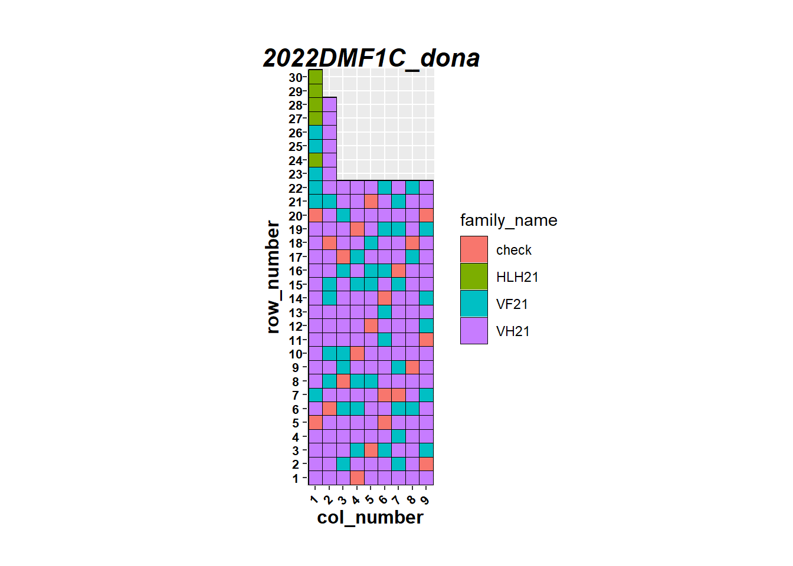

rm(list=ls())
## Packages (install)
pkgs <- rownames(installed.packages())
if(!"tidyverse" %in% pkgs) install.packages("tidyverse")
if(!"here" %in% pkgs) install.packages("here")
if(!"statgenSTA" %in% pkgs) install.packages("statgenSTA")
if(!"statgenGxE" %in% pkgs) install.packages("statgenGxE")
if(!"openxlsx" %in% pkgs) install.packages("openxlsx")
if(!"asreml" %in% pkgs) install.packages("asreml")
if(!"SpATS" %in% pkgs) install.packages("SpATS")2022DMF1C Asia
Introduction
This is a script about predictions in non-replicated trials with augmented checks. According to Salvador Gezan, the best way to make good predictions is to do a spatial analysis. See Part 1 and Part 2.
Load packages
Here we check whether all necessary packages are installed in your computer.
The code recognizes if certain packages are missing from your package library and, if so, will install them automatically.
Now, we need to load the packages:
library(tidyverse)
library(here)
library(statgenSTA)
library(statgenGxE)
library(openxlsx)
library(asreml)Online License checked out Mon Feb 6 18:14:15 2023library(SpATS)Load the functions of utilities_tidy on GitHub
source("https://raw.githubusercontent.com/Cassava2050/PPD/main/utilities_tidy.R")
source("https://raw.githubusercontent.com/darizasu/work/master/scripts/ggCor.R")
# remember call the functions updated according to these colnames.Load the files to check
local_file <- "yes"
if (local_file == "yes") {
folder <- "D:\\OneDrive - CGIAR\\Data Analysis\\2022DMF1C\\data\\"
file <- "phenotype.csv"
skip_col <- 0 # double check the number of col skipped
trial_interest = "DMF1C"
year_interest <- 2021
}
# 1) load the data
sel_data <- read_cassavabase(phenotypeFile = paste0(folder, file))[1] "Here are the trials and the study interested is DMF1C"Create the master_data file
master_data <- list()The data are already tidy, there are two trials, each with an augmented design with diagonal checks. It is necessary add the trial_name col.
Add the trial name col
The locations are: Dong Nai and Tay Ninh. Both in Vietnam
sel_data <- sel_data %>%
mutate(trial_name = str_sub(plot_name, 1, 14)) %>%
relocate(trial_name, .before = plot_name)Double check design
I will check the experimental design of each trial.
Duplications in row and cols
I had to modified the preloaded functions, because the data are already tidy and did no have the words “use_” and “obs_”
source("modified_functions.R") # I wrote a new utilities file because variables did not come from cassava base
duplicated_plot <- row_col_dup(sel_data)[1] "Good, there is no duplicated combination of row and column."Visualize layout
It is necessary fix the zeros in column “is_a_control”
sel_data$is_a_control[sel_data$is_a_control == 0] <- NAReplace factors in “is_a_control” var into check and test, then rename the column as “check test.
sel_data <- sel_data %>%
mutate(is_a_control = replace(is_a_control, is_a_control == 1, "check")) %>%
mutate(is_a_control = replace_na(is_a_control, "test")) %>%
rename("check_test" = is_a_control)Plotting the layout
trial_layout(sel_data)Warning: Using `size` aesthetic for lines was deprecated in ggplot2 3.4.0.
ℹ Please use `linewidth` instead.add family factor
sel_data <- sel_data %>%
separate(accession_name, into = c("family_name", "offspring"),
sep = "-", remove = F)Warning: Expected 2 pieces. Missing pieces filled with `NA` in 35 rows [9, 18,
24, 33, 42, 57, 66, 72, 81, 96, 129, 135, 144, 159, 168, 183, 192, 207, 216,
225, ...].checks <- sel_data %>%
filter(check_test == "check") %>%
distinct(accession_name) %>%
pull()
sel_data <-
sel_data %>%
mutate(family_name = ifelse(accession_name %in% checks, NA, family_name)) %>%
dplyr::select(-offspring) Delete the NA values of family names from checks and replace with word “check”
sel_data <- sel_data %>% mutate(
family_name = ifelse(is.na(family_name), "check", family_name),
family_name = as.factor(family_name)
)Layout family names
trial_layout_family(sel_data)
Fix the data in column 1 and 2 2022DMF1C_dona trial, according to Xiaofei’s comments; I;m going to remove col 1 and 2 from 2022DMF1C_dona trial
dona <- sel_data %>% filter(trial_name == "2022DMF1C_dona", !col_number %in% c(1,2))
sel_data <- sel_data %>% filter(!trial_name == "2022DMF1C_dona") %>%
bind_rows(dona)
trial_layout_family(sel_data)
master_data[["tidy_data"]] <- sel_dataBoxplot
# ideal traits out.width = '60%', fig.height=8, fig.width=8
trait_ideal <- colnames(sel_data[c(13:18, 22:26, 31, 33)])
plot_bxp <- sel_data %>%
pivot_longer(
cols = all_of(trait_ideal),
names_to = "var",
values_to = "values"
) %>%
ggplot(aes(x = trial_name, y = values)) +
geom_violin(trim = FALSE, fill = "gray") +
geom_boxplot(width = 0.2, trim = FALSE) +
labs(x = NULL, y = NULL, title = "Dong Nai location") +
theme_xiaofei() +
theme(
axis.text.x = element_text(size = 8, vjust = 1),
axis.text.y = element_text(size = 8),
plot.title = element_text(color = "black"),
) +
facet_wrap(~var,
ncol = 3, scales = "free_y"#,
#labeller = as_labeller(fct_labels)
) +
theme(
strip.text.x = element_text(
size = 12, face = "bold.italic"
)
)Warning in geom_boxplot(width = 0.2, trim = FALSE): Ignoring unknown parameters:
`trim`# labs(caption = "Trial name: Year + trial number + pipeline + trial type + location + months after planting")
plot_bxpWarning: Removed 315 rows containing non-finite values (`stat_ydensity()`).Warning: Removed 315 rows containing non-finite values (`stat_boxplot()`).Summary tables
i <- 1
for (var in trait_ideal) {
# summary tables
summ <- sel_data %>%
distinct(trial_name, plot_name, rep_number, accession_name, .data[[var]]) %>%
group_by(trial_name) %>%
summarise(
n_gen = n_distinct(accession_name),
n_reps = n_distinct(rep_number),
n_total = n(),
n_missing = sum(is.na(.data[[var]])),
n_percent = n_missing / n_total,
zeros = sum(.data[[var]] == 0, na.rm = TRUE),
rcbd = ifelse(n_reps > 1, TRUE, FALSE),
design = ifelse(n_reps == 1, "unrep", design)
) %>%
type.convert() %>%
arrange(n_gen)
summ <- summ %>%
as.data.frame() %>%
mutate(trait = var)
if (i == 1) {
resum_tables <- summ
} else {
resum_tables <- rbind.data.frame(resum_tables, summ)
}
i <- i + 1
master_data[[paste0("summary_", trial_interest)]] <- resum_tables
}Spatial Model
# factor
sel_data$family_name = as.factor(sel_data$family_name)
sel_data$accession_name = as.factor(sel_data$accession_name)
# create a factor of row and cols
sel_data$R <- as.factor(sel_data$row_number)
sel_data$C <- as.factor(sel_data$col_number)Dong Nai location
sel_data_dona <- sel_data %>% filter(trial_name == "2022DMF1C_dona")
# n segments
ncols = length(unique(sel_data_dona$C))
nrows = length(unique(sel_data_dona$R))gen = "accession_name"
i <- 1
for (trait in trait_ideal) {
mo_spatial <- SpATS(
response = trait,
genotype = "accession_name",
genotype.as.random = T,
fixed = NULL,
spatial = ~ PSANOVA(col_number,
row_number,
nseg = c(ncols, nrows),
degree = c(3, 3),
nest.div = 2
),
random = ~ R + C,
data = sel_data_dona,
control = list(tolerance = 1e-03, monitoring = 1)
)
plot(mo_spatial)
var.m0 <- variogram(mo_spatial)
plot(var.m0)
ng <- length(mo_spatial$terms$geno$geno_names)
g.SpATS <-
mo_spatial$coeff[1:ng] %>%
data.frame(coeff = .) %>%
rownames_to_column(gen) %>%
mutate(
variable = trait,
BLUP = mo_spatial$fitted[1:ng]
) %>%
filter(accession_name %in% sel_data_dona$accession_name) %>%
select(-coeff)
spat_h2 <- getHeritability(mo_spatial)
if (i == 1) {
pvals_table <- g.SpATS
} else {
pvals_table <- rbind.data.frame(pvals_table, g.SpATS)
}
i <- i + 1
}Timings:
SpATS 0.58 seconds
All process 0.62 seconds
Timings:
SpATS 0.78 seconds
All process 0.82 secondsTimings:
SpATS 0.33 seconds
All process 0.35 secondsTimings:
SpATS 0.41 seconds
All process 0.43 secondsTimings:
SpATS 1.32 seconds
All process 1.36 secondsTimings:
SpATS 0.29 seconds
All process 0.31 secondsTimings:
SpATS 0.49 seconds
All process 0.49 seconds
Timings:
SpATS 0.26 seconds
All process 0.3 secondsTimings:
SpATS 0.19 seconds
All process 0.21 secondsTimings:
SpATS 0.25 seconds
All process 0.28 secondsTimings:
SpATS 0.25 seconds
All process 0.27 secondsTimings:
SpATS 0.17 seconds
All process 0.19 secondsTimings:
SpATS 0.18 seconds
All process 0.2 secondseqt_fixed <- reformulate(c("season", "accession_name"), response = var)
met_model_f <- asreml( eqt_fixed,
random = ~ season:accession_name + at(season, row_col):rep_number +
at(season, row_col):col_f + at(season, row_col):row_f,
residual = ~ units ,
data = tmp_data, trace = 0) # workspace = "4gb"
met_model_f <- update.asreml(met_model_f )
met_model_f <- update.asreml(met_model_f )
pred_f <- predict(met_model_f , classify = "accession_name")
PP_f <- pred_f$pvals %>% mutate(variable = var)
sel_data_dona$check_test <- as.factor(sel_data_dona$check_test)
model <- asreml::asreml(
fixed = trait ~ 1 + at(check_test, "check"):gen,
random = ~ +at(check_test, "test"):gen,
residual = ~ ar1v(row_number):ar1v(col_number),
data = sel_data_dona
)sel_data_dona %>% select(accession_name, Root_Weight) %>%
rename("raw_root_weight" = Root_Weight) %>%
full_join(pvals_table %>% filter(variable == "Root_Weight"),
by = "accession_name") %>%
select(-variable) %>%
pivot_longer(!accession_name, names_to = "estimate", values_to = "root_weight") %>%
ggplot(aes(x = accession_name, y = root_weight)) +
geom_boxplot() +
theme_xiaofei()I need to finish all code and upload to GitHub, Xiaofei wants to check it.
Model
# factor
sel_data$family_name = as.factor(sel_data$family_name)
sel_data$accession_name = as.factor(sel_data$accession_name)
# create a factor of row and cols
sel_data$R <- as.factor(sel_data$row_number)
sel_data$C <- as.factor(sel_data$col_number)
sel_data_tani <- sel_data %>% filter(trial_name == "2022DMF1C_tani")
#write.csv(sel_data_tani, "sel_data_tani.csv")Dong Nai location
sel_data_dona <- sel_data %>% filter(trial_name == "2022DMF1C_dona")
# n segments
ncols = length(unique(sel_data_dona$C))
nrows = length(unique(sel_data_dona$R))